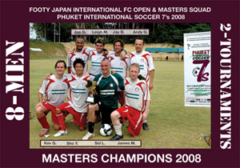

OLD STORIES - November 2008
8 BRAVE MEN, 2 PUNISHING TOURNAMENTS, 1 GREAT TOUR.
Footy Japan International FC, Sponsored by Robert Walters
Phuket International 7's Open & Masters Competition
29th/30th November, FIFA Tsunami Memorial ground, Phuket, Thailand
Having just 1 sub, for a 7-a-side tournament is hard work.
Add to that some quality opposition, searing Thai heat and the fact that the same 8 man squad would have to play in two competitions, both Open and Masters simultaneously, and the job quickly evolved from laborious to one of utter insanity. more ...
FJ.
Hibs Phuket Champions 2006, 2007 and 2008, Three Peat!
Well we did it! Winning not only the tournament but the Fair Play award too. A small but strong squad of Hibs players made the trip down to Phuket for the 7s tournament again this year. more ...
BC.
Toby Boy Blitzes Hatrick At Old School Reunion
Fukuda Denshi, Sunday 30th November
26/11/08 04:30 Hours - Commandos arrive in Methven and airlift strike legend to Japan!
26/11/08 10:05 Hours - Gravediggers arrive in Kichijoji and exhume trusty goalkeeper!
It was these two events that led to the legendary pair, Giles Legg (one of Sala FC's founding fathers) and Andy Cross (stalwart goalkeeper of many a past and present TML team) turning out for Sala against the Lions. Good on them both! more ...
ST.
A Hattrick then Farewell
Hachioji Park, Saturday 29th November
Following a mid-week take-over from Robert Walters and the promise of a fresh new strip the geckoes took on the might of Saitama that is the Jets at Hachioji Park. more ...
JS.
"A Sub, a Sub. My Kingdom for a Sub!"
(Why Richard III Fails his Old Boys Trial)
Oi Futo, Saturday 29th November
Oh no, here we go again. Cue trumpets playing theme tune from 'Rocky' over footage of the aging but still brilliant Ali in Kinshasha doing his rope-a-dope on the much younger, much fitter George Foreman. I'm sure many of you are getting fed up with reading this "Outnumbered-Old Geezers-Prevail-Over-Numerically-And-Chronologically-Advantaged-Opponents" piece, but it keeps happening, and though it's getting harder to describe these Groundhog Days in a different way each time, I don't get get fed up writing about them, especially when the Old Boys have taken three points off Zion FC, one of the top teams in Division 2, with a thoroughly deserved 3-1 victory. more ...
TC.
The Bitter Chalice
Hachioji Park, Monday 24th November
Picture this, gentle reader. It`s 9PM, the freezing rain stings more than Jorge Kuriyama`s secret Jalapeño sauce and you are abt 100 km from home. Your team is up 3-2 against the squad at the top of the league with five minutes to go. One of your strikers just hit the post. What do you do? Of course you concede two goals just in time for the (excellent) ref to blow the whistle. Sure, the strong FC International team play great football and dominated the game, but the Dutch held their own, evening the score twice before taking the lead, thanks to teamwork and their swift strikers. Such is the cruel game of football. On to the next game...
LL.
A Very Nice Game of Footie
Hanno, Saturday 22nd November
Despite a late kick off, waiting for players to arrive Y-Abe started the match in Hanno with only nine players. The Jets looked to press home their numerical advantage early on and did so in the first five minutes. more ...
CP.
Tireless Tomo Trumps Jets
Hanno, Saturday 22nd November
Very occasionally a match comes along that is has it all. A game that can be the source of bar-room banter for years to come as the great moments and controversy are remembered time and time again. This was not one of them. more ...
BC.
10-man BFC squish Geckoes
Daito Bunka, Sunday 16th November
Even when he is sent off Carlos Aranda makes an impact. TML Champions BFC went from 2-1 and not overly impressive to 5-1 after 'El Mulleto' (you were warned, Carlos) got his marching orders for an ill-advised shove on a Geckoes player. The same score as last year's meeting on the same Mickey Mouse pitch between the two sides and a result, which like season, saw champions BFC climb above Geckoes in TML1 ... so, you know, that's good. more ...
LS.
 |
|
Andre Pinto increased his goal tally to 10 with another hattrick! |
Hibs Make it Six in a Row
Hachioji Park, Sunday 9th November
The Hibs and France have a colourful history dating back to a time when the TML was not even a twinkle in Sid's eye. So it was good to finally reacquaint ourselves after France's one year hiatus in division two. France FC are a feisty bunch and a game against them is always likely to have its share of thrills, spills and controversy. This one was no different. We’ve had some memorable games over the years including the last kick of the game goal that saw us win 3-2 Hibs after being down 2-0 down at half time and the 8-5 victory after going down 1-0 to 10 men after two minutes before bouncing back to be 7-1 up at half time. more ...
BC.
Shouldn't Let a Cub do a Lion's Job!
Misato, Monday 9th November
After the BFC game, Lions were looking forward to challenging the top guns in Div 1, and with 6 players who were core in the win over BFC missing due to exams (and 1 sending off), Lions hoped that their skillful young lads will do the job against the Swiss. more ...
HS.
 |
|
Mauled by a Lion? BFC's Garry after a bloody encounter. |
BFC Brought Down to Earth by Gritty LIONS
Hachioji Park, Monday 3rd November
BFC’s season seems to have hit a snag after they were caught out by some very physical and hungry Lions. BFC have also made it a habit of not writing match reports when they lose. But this time, instead of claiming amnesia or lack of visual acuity, BFC will humbly eat pie this week and accept the “shame.” We were well and truly beaten.
The match had many talking points and bizarre events and I will skirt around many of them as decorum requires. Guess who the referee was. There was even blood as the mighty Norse god Garry needed stitches from a collision of heads early in the first half. more ...
EGK.
Div 2 Champs see off Div 1 Holders
Hachioji Park, Monday 3rd November
With Lions almost back to full strength, BFC were assured a game!
Lions team talk after the last game against Geckoes, where wasted chances that could've killed off the game with 2 or 3 goals as early as 15 minutes, cost the Div 2 Champs dearly, as they slumped to their first defeat this season. more ...
HS.
Old Boys Stock Up Two Points, But Another Bad Day for Wall Street
 |
|
Hitoshi Ono gets the attentions of WallStreet's Rob England |
Oi Futo, Saturday 1st November
I always feel constrained by this front page teaser format, where you feel obliged to give the game result and a one-sentence summary for the short-attention-span readers when the riff you're working on for the match report might run on and take too many of another game's column inches.
So for those with a short attention span, it was Tirelessly Unpredictable Tokyo Bay Breeze 5, Unforgivingly Bouncy Oifuto Pitch 4, Albion Old Boys 3, Wall Street Clash 2, Beautiful Game 0. For those with a bit more time on your hands, click here...
TC.
Familiarity Breeds... a Better Team
Oi Futo, Saturday 1st November
As most TML players will know, there are occasions when it is necessary to play together with complete strangers in order to get 11 men out on the field. And, as is natural, it is almost impossible to strike up an immediate understanding with someone you have just met. It was this problem, more than anything that led to Y-Abe FC's 5-1 tonking at the hands of El Diego. more ...
JC.
Ex-Celt Ed lifts Hibs Over His Old Team
Hachioji Park, Saturday 1st November
The Celts and Hibs have had a local-derby type rivalry akin to a Man City v Man U and have always had close games which have been played in (largely) good spirit. Both teams come from Irish roots, but in recent years the Celts have had more Irish players than the Hibs. more ...
BC.
Dutch Embassy and YC&C 2 go Dutch
Oi Futo, Saturday 1st November
The spoils were shared at Oi Futo as the Dutch Embassy went head to head with a mixture of High School Kids and their Dads from the YC&AC 2nd team. more ...
LVL.